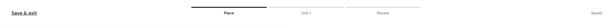
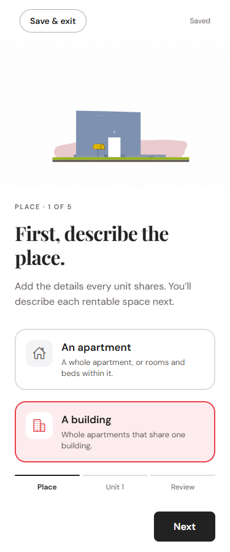

Save & exit at the left. Progress centered on the page, capped at 720px. Save status at the right. Saving does not shift the layout.
Open the wizard · Checks and measurements · Test draft cleanup

